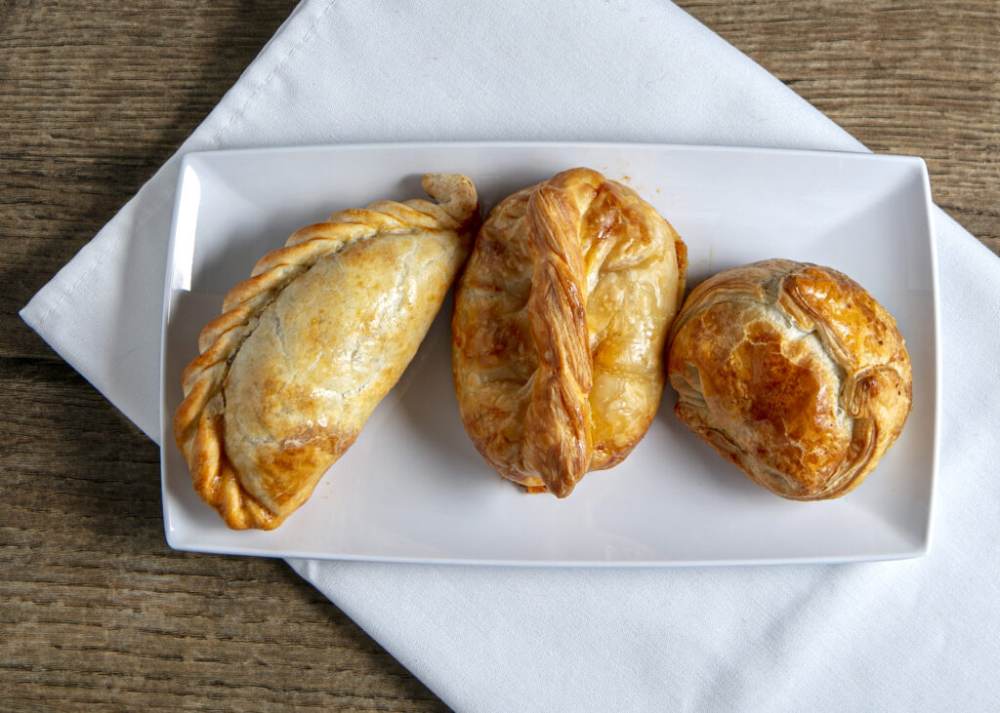

Chicken Empanadas

This starter is a classic in Argentina, every national holiday has empanadas. There are several different types
of empanadas, such as vegetarian, beef, chicken and many others. In this recipe we are going to focus on
chicken.
Ingredients
Empanada Dough
- 3 1/2 cups all purpose flour
- 1 tsp sea salt
- 1 cup unsalted butter
- 1 large egg
- 1/2 cup milk
Empanada Filling
- 1 lb boneless, skinless chicken thighs
- 1 bay leaf
- 1.5 tbsp extra-virgin olive oil
- 1 large onion, chopped
- 1/2 medium green pepper, chopped and seeded
- 1/2 medium red pepper, chopped and seeded
- 1 pinch ground pepper
- 1 1/2 tbsp tomato paste
- 1 tbsp sweet paprika
- 1 1/2 tbsp dried oregano
- One pinch cayenne pepper
Instructions
Empanada Dough
- In a large bowl mix the flour and salt
- Add butter and flour mixture to a food processor and pulse. IF you don't have a food processor, you can mix
by hand.
- Add in the egg and milk a little bit at a time. Continue mixing or pulsing until the dough is clumpy.
- Divide the dough into two equal large balls. Flatten the balls into disk shapes. If you don't make the
filling right away, the dough can be refrigerated for up to two days.
- Roll the the dough into a thin layer. Cut out circular shapes. You can use bowls or small plates as a
template. If you have a tortilla press you can use it to flatten the dough balls.
Empanada Filling
- In a medium pot bring 2 cups of water, chicken and bay leaf to a simmer. Cook until chicken is cooked through (approx. 30 minutes).
- Transfer chicken to a plate. Allow to cool. Discard the bay leaf. Reserve the broth for later.
- When chicken is cool enough to handle, coarsely chop.
- Heat a large pot on medium. Add bell peppers and onion. Cook until tender, but not brown. (approximately 5-6 minutes). Season with salt and pepper.
- Stir in tomato paste and cook until it darkens (approx. 1-2 minutes).
- Add paprika, oregano, and cayenne pepper. Cook while stirring constantly until it becomes fragrant (approx. 1 minute).
- Add the reserved broth and chicken to the large pot.
- Bring to a simmer and cook, stirring regularly. Be sure to scrape the bottom of the pot to remove anything stuck. Cook until most of the liquid is gone (approx. 15-minutes).
- Season with salt and pepper to taste.
- Transfer to a medium bowl and chill for at least 3-hours.
Empanada Stuffing and Baking
- Allow dough to rise to room temperature.
- In the middle of each empanada disk place a spoonful of the filling. The amount of filling will vary depending on the size of the empanada. Make sure not to over-stuff the empanada.
- Fold the dough over the filling and seal the edges by pressing on the dough with a fork.
- Brush the top and edges with egg-wash to allow it to brown.
- For the best results chill the empanadas in the fridge for 30-minutes before baking. This will help them seal. It's not necessary, but it helps.
- Preheat oven to 375°F. Bake for approx. 20 minutes until the outside is golden brown.